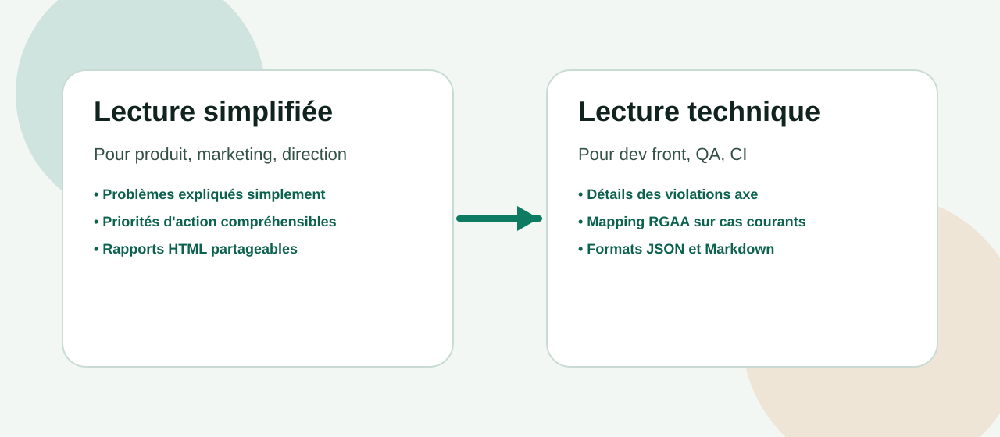
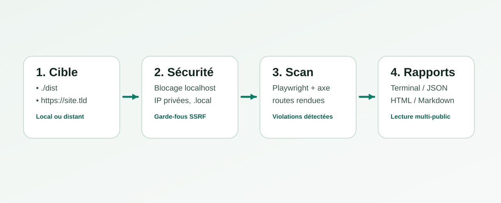
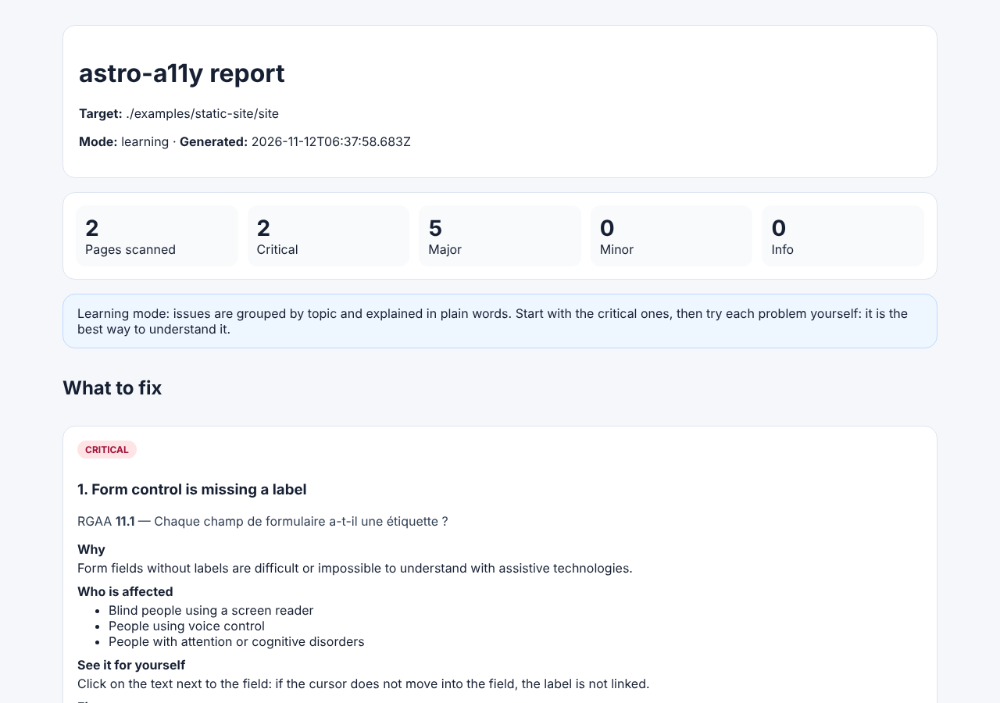

Ce que fait Astro a11y
L'outil détecte automatiquement des défauts d'accessibilité techniques sur les pages déjà rendues, puis propose des pistes de correction.
Audit d'accessibilité RGAA open source pour Astro
Astro a11y scanne vos pages rendues avec Playwright + axe, enrichit les résultats avec des recommandations actionnables et relie les problèmes courants au RGAA.
Pour le grand public et les décideurs
L'outil détecte automatiquement des défauts d'accessibilité techniques sur les pages déjà rendues, puis propose des pistes de correction.
Il ne remplace pas un audit humain complet ni les tests utilisateurs. C'est un garde-fou opérationnel, pas une certification légale.

Fonctionnalités
Images, couleurs, liens, formulaires, ARIA, structure, navigation… Chaque problème indique le critère RGAA concerné, pourquoi il gêne et comment le corriger.
Les pages sont parcourues avec la touche Tab : pièges au clavier, focus invisible et lien d'évitement cassé sont détectés.
Rapports HTML, Markdown et JSON, avec une vue par critère RGAA. Le rapport HTML est lui-même vérifié accessible.
Intégration Astro, CLI et GitHub Action qui commente vos pull requests. Avec une baseline, seuls les nouveaux problèmes font échouer le build.
Analyse d'un dossier de build ou d'un site en ligne à partir de son sitemap, avec des garde-fous contre les requêtes vers des adresses privées.
Pour les ateliers : qui est gêné, comment constater le problème soi-même, et ce qui fonctionne déjà.
Pour les développeurs
Une cible locale (./dist) ou distante (https://...) est analysée avec garde-fous sécurité.
Les pages sont ouvertes dans Playwright puis vérifiées via @axe-core/playwright.
Les violations sont enrichies avec recommandations et mapping RGAA pour prioriser les fixes.

Positionnement
Les deux projets sont complémentaires, mais ils ne répondent pas au même besoin principal.
Un guardrail Astro-first: il s'intègre au build Astro (ou via CLI) pour industrialiser un contrôle régulier et produire des rapports exploitables par les équipes dev, QA et produit.
Points forts: intégration Astro, pipeline simple, formats Terminal/JSON/HTML/Markdown, garde-fous de sécurité sur scans distants.
Un pré-audit RGAA généraliste, orienté pédagogie et lecture de conformité, avec une approche plus large hors contexte Astro.
Points forts: vulgarisation RGAA, couverture présentée par thèmes, et usages orientés diagnostic initial.
En pratique: si ton équipe construit en Astro et veut un contrôle continu au moment du build, Astro a11y est la bonne couche. Pour une lecture RGAA plus transversale et pédagogique, rgaa-audit reste très utile.
Lien vers l'autre projet: https://stan69000.github.io/rgaa-audit/
Preuve visuelle
Cette capture provient des artefacts versionnés du dépôt, générés par le scénario d'exemple.

Démarrage
pnpm add -D @astro-a11y/astro-integration
pnpm astro buildimport { defineConfig } from 'astro/config';
import astroA11y from '@astro-a11y/astro-integration';
export default defineConfig({
integrations: [astroA11y({ mode: 'balanced' })]
});
Rapports par défaut dans dist/astro-a11y/. La CLI reste disponible pour scanner un dossier build ou une URL.
Disponible sur npm :
@astro-a11y/astro-integration
pour l'intégration et
astro-a11y
pour la CLI (npx astro-a11y check dist). Chaque version est publiée par GitHub Actions,
avec une attestation de provenance qui prouve qu'elle a été construite depuis ce dépôt.